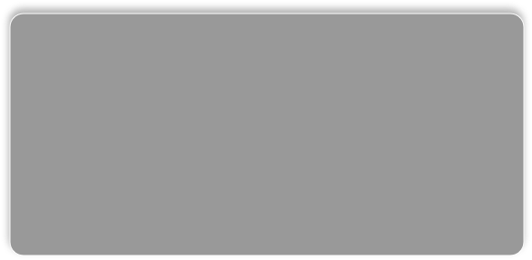
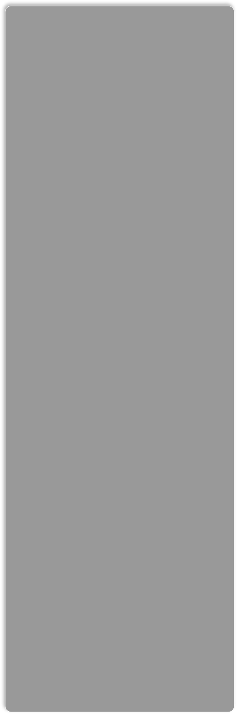
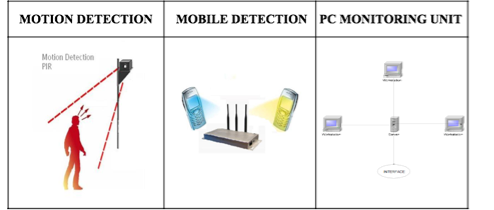

Detectors
  

![Motion Detectors
Infrared motion sensors detect heat changes in a given area. There are two types of infrared motion sensors called active and passive sensors. Active sensors emit invisible light lying in the infrared range of the electromagnetic spectrum.
Passive infrared motion sensors work by detecting the heat emitted by living objects. If the temperature in the detection area is changed and is above a certain threshold then motion is detected, otherwise any small variation of temperature is ignored.
Passive infrared sensors are considered as one of the most reliable sensors. They are also small and cheap. On the other hand, the detection area is a circular area around the sensor; hence there are areas between the units that are not covered. Passive infrared sensors are affected by direct sunlight and should not be put opposite a window. Hanging objects such as balloons may also cause false detection and walking towards the sensor instead of across it may result in not detecting the movement.
Mobile Detectors
This sensor will utilize the signal that is constantly sent out by a mobile phone, even if it is not used to make or receive a call. The signal includes the ‘Mobile Identification Number’ and the ‘System Identification Code’ used by the mobile phone to identify its self and register on the network. Since it is in the 1800 MHz band, in order to detect it, a simple radio signal receiver is needed, tuned in this frequency band. The receiver’s sensitivity should be such that its range should be similar to the size of the room concerned, picking up signals from that room only. Then the presence of a signal would be interpreted that someone is in the room switching on the lights.
The advantages of this receiver include the fact that it is passive, meaning that it does not emit any radiation itself, keeping power consumption to negligible levels. Also, it is a simple and cheap detector to build, light, taking very little space. Considering also the fact that the number of mobile phones is increasing quickly to one-phone-per-person, and the very high number of young users, this could be the solution for the future.
Problems with this detector are the facts that not everyone has a mobile phone (yet) and that someone may forget his mobile phone in the office (or not bring it at all to work!). As a result this detector would be more effective if used with a combination of other sensors.
PC Monitoring Unit
The software installed on workstations will run continuously. For simplicity we will consider just one workstation and then generalise. To detect if a computer is used, the most basic check that can be done is if the user is logged in. If the user is not logged in, the software is not ran and hence the workstation will not send any information to the server. Hence this operation is beyond the scope of the software since it cannot determine if a workstation is logged in or not (read more on this later when the Office Detector will be considered).
When the user is logged in, the software will be ran automatically (since by default it will start when Windows open). Once the software is ran a message to the server will be sent letting it know that the user is logged in. Any use of the computer will inform the software that the computer is used. Mouse clicks, mouse movements or keys of keyboard pressed are all considered to be evidence that the computer is used. It is important to note that all these events should be identified by the software even when the software is minimized in the system tray (as it will be in all cases). Therefore all global events (as opposed to local events happening in the program) should be considered.
Each time an event occurs it will initialise a timer which will count up to 10 minutes. If during this time another event occurs then the timer will be reset. If nothing happens, a message will be displayed on the screen which will ask the user if he is present. If the user doesn’t answer within a time of 5 minutes then the software will send a message to the server letting it know that the user stopped working on the computer. If within the 5 minutes the user responds to the message, another timer will be set which will count up to 30 minutes. Within this time if any movement occurs will reset the timer. Once the timer reaches 30 minutes then a message will be displayed, asking again the user if he uses the computer. The same procedure follows until the user doesn’t respond to the message for 5 minutes. Once this happens, a message will be sent to the server saying that the user stopped working on the workstation.
The “Office Detector” software will be installed on the computer acting as a server for the office. It will have the responsibility of keeping a record of which computers are being in used and making the final decision of whether there is any computer used or not. Note that the program will run continuously
First it will check which computers are logged in and which are not and update its record. Then its record will be updated on real time as data are received from the computers. Once all computers are assumed to be not used it will output to the outside, physical, world a signal that no user action is detected](Detectors_files/shapeimage_5.png)